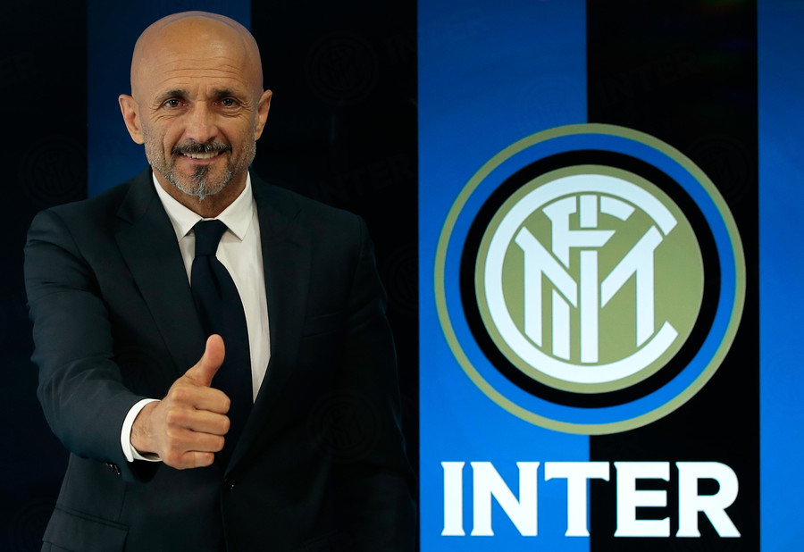
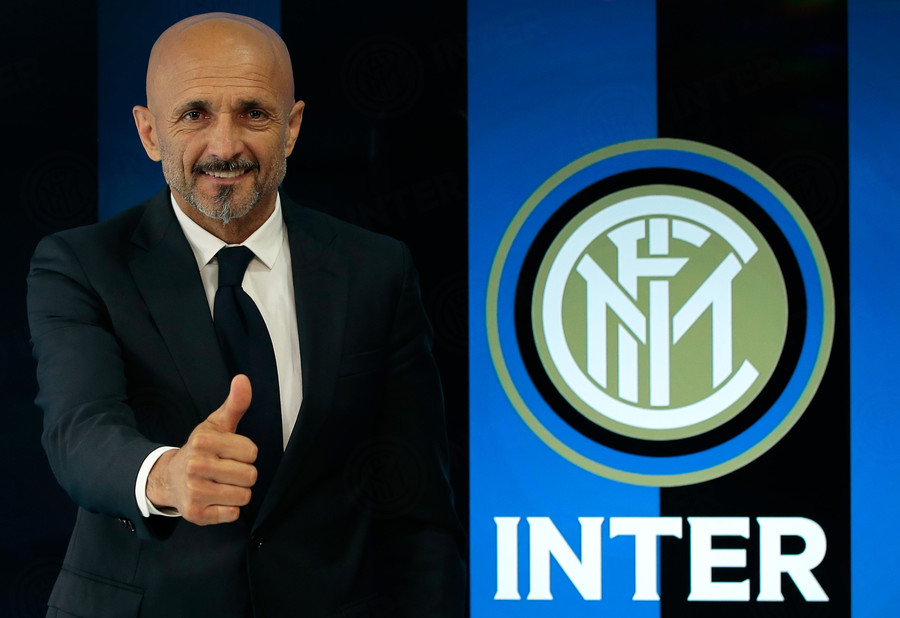

Allenatore
La stagione è stata piuttosto travagliata e ha visto succedersi diversi allenatori.
Il nuovo allenatore appena annunciato, sperando che duri un po' più a lungo è:
Luciano Spalletti
La stagione è stata piuttosto travagliata e ha visto succedersi diversi allenatori.
Il nuovo allenatore appena annunciato, sperando che duri un po' più a lungo è:
Luciano Spalletti
